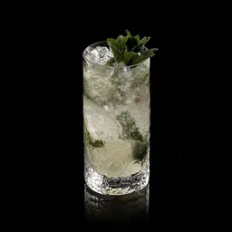

INGREDIENTES
- 50 ml de rum branco
- 6 folhas de hortelã
- 30 ml de suco de limão fresco
- 2 colheres (chá) de açúcar
- Água com gás
- Gelo
INSTRUÇÕES
- Macere hortelã e açúcar no copo.
- Adicione suco de limão e rum, misture.
- Complete com gelo e água com gás.
- Mexa e decore com hortelã.